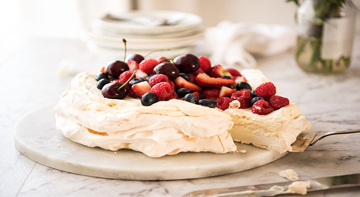
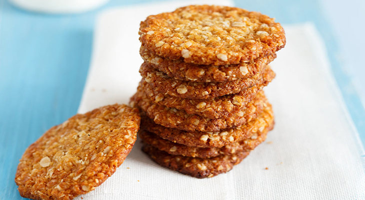
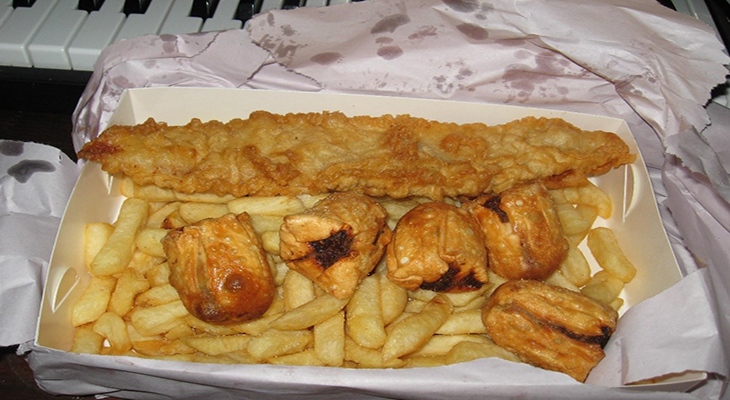
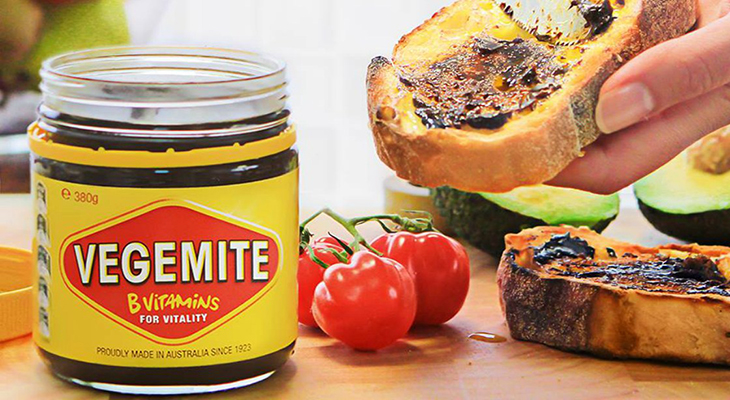
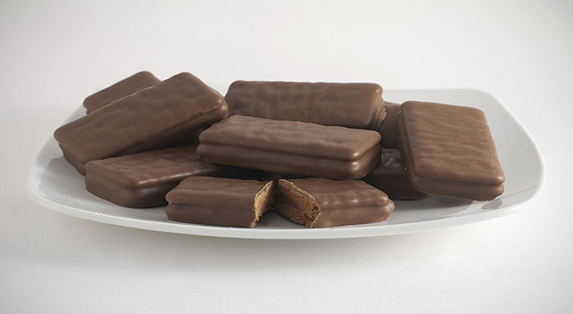

Five Iconic Australian Foods
Posted on April 01, 2018 at 01:30 PM
Australia has no shortage of incredible food – the whole country is liberally peppered with world-standard restaurants and innovative cafes steered by imaginative and heartfelt chefs. But, as Australia Day approaches, it’s time to break out those uniquely Aussie and occasionally daggy foods that may not be fancy, but they’re the ones that care packages from home are made of.
1. Pavlova
Named after the ballerina Anna Pavlova, the not-this-again, hotly contested debate still rages: are the origins of this iconic dessert from Australia or New Zealand? Whichever side of the ditch you’re cheering for, the good old pav still sits proudly on the dinner table. Our plate-sized meringue with its soft center is classically topped with whipped cream and passion fruit pulp, perhaps kiwifruit and fresh berries, occasionally Peppermint Crisp. A special shout out goes to the Chocolate Ripple Cake, the dessert savior of all those who can’t wrangle a stove.
2. Anzac Biscuits
The recipe for these iconic biscuits was designed to have maximum nutritional value (hence the oats) and to be able to stay fresh on the long sea journeys to reach soldiers in Gallipoli (hence no eggs in the mix). Their lovely, dark flavor comes from using treacle or golden syrup as a binding agent. Bake a batch, store them in a decorative old tin, just like they were sent over in, and spare a thought.
3. The Fish and Chip Shop Dim Sim
A far cry from the dainty versions we see nestled in bamboo baskets at a Sunday yum cha session, the good old dimmie, served sweating in a soy-drenched plastic bag, is one of those guilty takeaway pleasures – a baby fist of meat and cabbage wrapped in a thick, wonton skin-like pastry and either steamed (if you want to be sophisticated) or fried (if you’re hungover).
4. Vegemite
It’s hard to imagine that a nation of Marmite lovers, hesitant to change camps when Vegemite came on the scene in the early 1920s. But perseverance from the Fred Walker Company (including a short-lived puntastic name change to Parwill: “If Marmite…then Parwill!”) paid off and now that salty, dark spread made from brewer’s yeast, packaged in jars with sunny yellow lids and labels, lives in just about every household in the country, adorning white toast and confounding tourists.
5. Tim Tams
They’re simple but luxurious – two chocolate biscuits sandwiched with chocolate cream and coated in creamy, shiny chocolate for good measure. They landed on our shelves in the early 1960s and their allure refuses to wane with the decades. Go for the classic, available wrapped in milk, dark or white chocolate, or pick up a limited-edition Adriano Zumbo collab in flavours such as Red Velvet and Salted Caramel. Make sure your Australia Day celebrations include a Tim Tam Slam (biting off opposite corners of the biscuit, dunking it in tea or coffee, sucking the drink up through it then scarfing the biscuit before it disintegrates).
Categories
Recommended

Duis consectetur gravida
Nullam non magna lobortis, faucibus erat eu, consequat justo. Suspendisse commodo nibh odio.

Duis consectetur gravida
Nullam non magna lobortis, faucibus erat eu, consequat justo. Suspendisse commodo nibh odio.

Duis consectetur gravida
Nullam non magna lobortis, faucibus erat eu, consequat justo. Suspendisse commodo nibh odio.